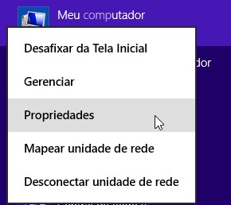
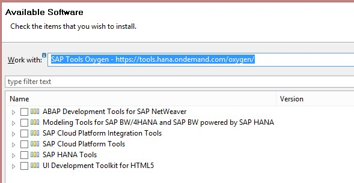
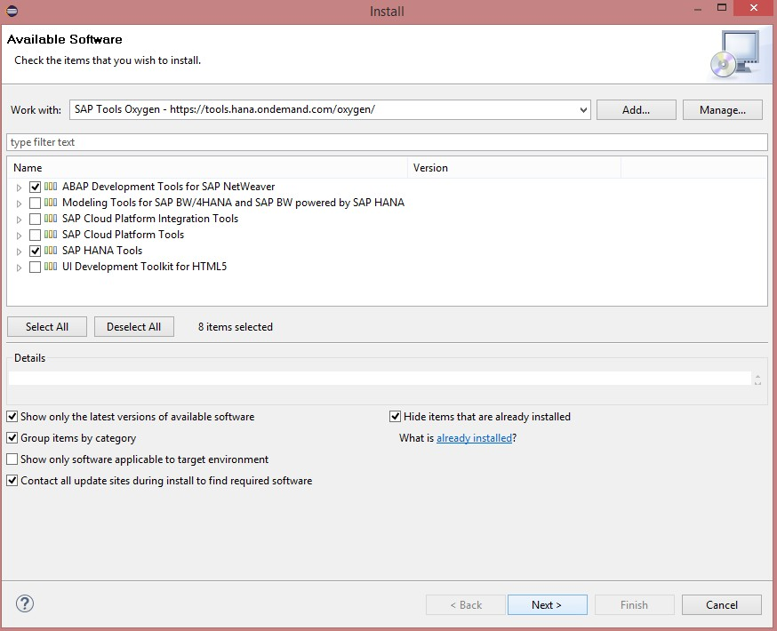
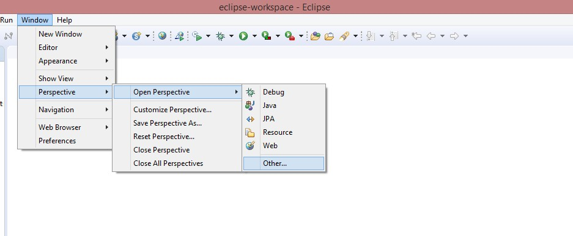
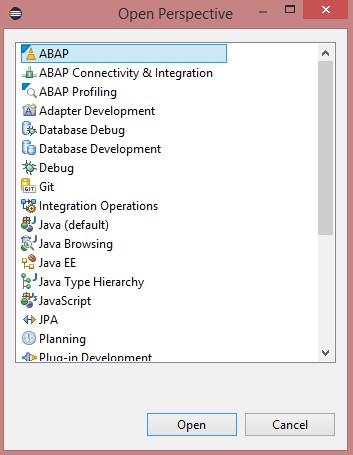

Pré-Requisitos
1 - Instalação versão mais recente
No site SAP Development Tools a SAP disponibiliza o procedimento para instalação da versão mais recente estável do Eclipse com ADT (ABAP Development Tools). As versões mais recentes do Eclipse utilizam JRE 11, portanta caso tenha problemas com essa versão ou alguma incompatibilidade, use a versão Oxygen do Eclipse com o JAVA JDK 8.
Se utilizar a versão disponibilizada no SAP Development Tools, ignore os passos 2 e 3.
2 - Instalação do JAVA 8 JDK
Windows
Acesse o site da Oracle e instale o Java JDK 8 (instalar o update mais recente, desde que seja Java 8. Atentar ao fato que é preciso instalar o JDK e não o JRE, e o Java precisa estar na versão 8 (versões anteriores não servem).
Após a instalação, verifique se existe a variável de sistema JAVA_HOME e se ela está apontando para o diretório de instalação do seu Java JDK.



3 - Instalação do Eclipse
Para instalação do Eclipse é preciso ter o JAVA instalado previamente.
Windows
Acesse o site do Eclipse e faça download do Eclipse Oxygen 4.7
Instale a opção "Eclipse IDE for Java Developers"

4 - Instalação do ADT (ABAP Development Tools)
Windows
Os passos a seguir estão descritos no site SAP Development Tools ABAP para instalar o plugin ADT (ABAP Development Tools) no Eclipse Oxygen.
-
Abra o Eclipse Oxygen;
-
Vá em Help>Install New Software..;

- Se tiver usado a versão do SAP Development Tools, adicione o repositório informado no site da SAP. Caso tenha usado a versão do Eclipse Oxygen, adicione o repositório https://tools.hana.ondemand.com/oxygen e pressione Enter;



- Marque as opções ABAP Development Tools e SAP HANA Tools e clique em Next;

- Clique novamente em Next, aceite os termos de licença e clique em Finish;


- O Eclipse vai começar a baixar e instalar os Plugins de ABAP e de HANA;

- Caso apareça algum warning, basta clicar em Install Anyway;

- Após conclusão da instalação, será necessário reiniciar o Eclipse Oxygen;

Para verificar se a instalação dos plugins ocorreu com sucesso, basta seguir os seguintes procedimentos:
- Acesse o menu Window>Perspective>Open Perspective>Other...;

- Deverá ter as duas perspectivas na lista de perspectivas, a de ABAP e a de HANA;
